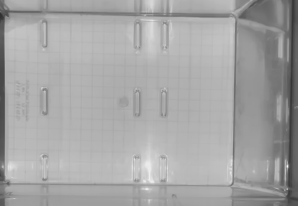
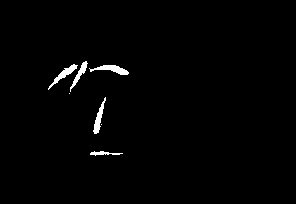
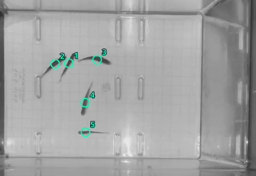
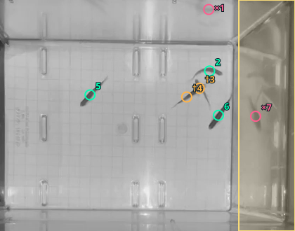
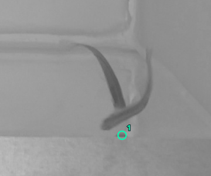
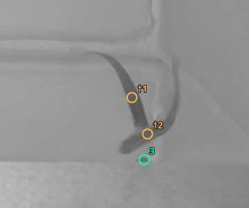

How the analysis works
The app samples frames from a tank video, finds candidate fish centers, measures distances between those centers, and connects nearby detections into groups. Every result depends on what the detector found in that frame.
Back to the analyzerWhich frames are analyzed?
The browser reads the selected video at the chosen interval, 200 milliseconds by default. That gives about five sampled frames per second. A crop restricts detection to the selected tank area; exported coordinates still refer to the original video frame. You can draw a crop on the preview or enter its coordinates. Background mode can follow provisional fish paths between samples up to 250 ms apart. T numbers label these paths, not verified individual identities. A fish can exchange identities with another during an overlap.
Background subtraction
This is the default method for a fixed camera and a relatively stable tank background.
- Build a reference. Sample up to 25 moments across the video and take the median grayscale value at each pixel. Moving fish usually disappear from this median image.
- Find foreground changes. In each analyzed frame, mark pixels at least 24 grayscale levels darker than the reference. In marked dark regions, accept brighter changes of the same size too, so pale fish remain visible against a dark floor. Use the preview’s area tool to mark dark and light areas with rectangles or four corners; the last drawn region wins at overlaps. Results and exports classify each fish by its center as dark, light, or unmarked. With one fish expected and a marked dark region, the rest of the usable tank counts as light, and the timeline shows light/dark changes instead of group changes. Missing or uncertain positions appear as unknown; observed crossings require adjacent known samples. Four-corner tank outlines exclude pixels outside the angled swimming area. By default, dark-region candidates also need a small core beyond the learned background brightness range, allowing two pixels of fixture movement; this reduces ridge flicker while preserving a crossing fish’s full detected outline. Turn off Learn background flicker in Advanced settings if faint fish are missed. Small erosion and dilation passes remove specks and join nearby marked pixels. For rectangular crops, strips near crop edges are excluded to reduce tank-wall detections. Four-corner crops use their outlined boundary.
- Keep plausible regions. Connected marked pixels become candidate regions. By default, the detector keeps regions with an area of 45–2,500 pixels and a span of at least 10 pixels. The optional experimental threshold-splitting method described below also admits larger regions. The reported position is the mean X and Y of the region’s marked pixels.
- Try to recover missed fish. When fewer candidates than the entered known fish count are found, the detector checks closer to the crop edges. It may also split a large region into two if fish appear joined. These attempts are flagged in the export; the known count does not force a correct result.
With one fish expected, a clear single detection also checks competing candidates in the immediately preceding sampled frame, including rejected candidates. A supported candidate within 45 pixels is selected if it is at least 8 pixels closer than the next candidate. Samples must be no more than 250 ms apart. The earlier frame’s center, tracking, measurements, and exports update together. This can change an earlier automatic choice; it does not infer hidden positions or work backward through a run of ambiguous frames. Reanalyze to apply this rule to an existing recording.
If no fish is found in a single-fish dark-region sample, the detector can search near supported candidates in the preceding 250 ms, including rejected alternatives. It can retain fainter connected body pixels, but requires a stronger core beyond the learned background range, compatible body size, and a new center within 45 pixels. Crop boundaries still apply. Reflection preference areas remain usable and lower candidate priority only when there are extra detections. If a faint detection suddenly shrinks below half the preceding observed body, a tighter search can also recover connected body pixels near that earlier center. The new outline must retain the original fragment and pass brightness and size checks. These are measurements from the current image; a nearby detection alone cannot fill an empty frame.
Best suited to stationary footage. Reflections can look like fish, while overlapping fish can merge into one region. The median reference can also be inaccurate if a fish stays in one place for much of the video.
From pixels to physical distances
All spacing uses straight-line distance between detection centers: horizontal and vertical pixel differences are combined with the Pythagorean formula. To express that distance in inches, enter how many pixels span one 0.5-inch square of the paper grid.
Display distances follow the selected centimeters or inches setting. CSV and JSON results use centimeters and centimeters per second; calibration fields such as pixels per inch retain their inch-based meaning.
You can also click Draw calibration line below the preview, drag along a known distance, enter its actual length in the selected distance units, and click Use this scale. The app divides the line’s length in original-video pixels by its length in inches and fills in the equivalent half-inch-square calibration. Existing distance results update without rerunning detection. Measuring several squares near the swimming area helps reduce endpoint error.
For the prefilled 15.3 pixels per half-inch square, one inch is about 30.6 pixels. A 1.5-inch close distance therefore links centers up to 45.9 pixels apart. Recalibrate for other footage or camera views. Perspective makes a single scale approximate when fish appear at different depths.
How groups are counted
For one frame, the app checks every pair of detection centers. It draws a link when their distance is at or below the chosen close distance. Fish connected directly or through other fish belong to one group. A group of two or more counts as a cluster; a single unlinked detection counts as isolated.
In this example, A and C can be farther apart than the close distance and still be in the same group through B. The smallest distance that makes every detected fish one group is the longest link needed to connect them all, not the largest pair distance.
What the displays mean
- Colored dots and numbers: group membership within the selected frame. Group numbers do not identify the same fish or group in later frames.
- Group sizes: a pattern such as
3+2means two groups containing three and two detections. - Timeline marks: a mark appears when the sorted group-size pattern changes between sampled frames. A mark can also reflect a missed or extra detection.
- Distance chart: shows how the selected frame’s cluster and isolated counts change as the link distance changes. Moving its slider recalculates grouping without running detection again.
How to check a result
First inspect the colored centers on the video. Count visible fish and check whether each center lands on one fish. Then inspect frames around timeline changes; a brief count change may be a merged fish or reflection. Finally, move the close-distance slider slightly. If the group count changes with a tiny adjustment, that frame sits near the chosen boundary.
After analysis, the Results workspace shows groups, measurements, and corrections together. Enable Edit centers to start from the current detections; click a center to remove it or an empty position to add one. You can show the automatic centers for comparison, mark frames reviewed, and export your marks and frame-level counts. To correct a frame, check all its centers and choose “Done & next” to apply and continue, or “Apply & stay” to inspect the updated measurements. Draft edits do not affect measurements until applied. This replaces its centers in measurements and exports; applying no marks sets its count to zero. “Restore automatic centers” undoes the change. Original automatic candidates remain in JSON and in the diagnostic comparison. Corrections affect only this frame; they do not rerun tracking. Distances and groups otherwise include uncertain estimated positions. The full-frame toggle lets you mark fish outside the analyzed crop; these are exported separately and excluded from the cluster comparison. Include crowded, isolated, reflection, and crop-edge cases. A matching fish count alone can hide a misplaced detection.
“Average pair distance” is the mean of all center-to-center pairs in each frame, averaged over frames with at least two detections. “Detections near another” is the share whose nearest detected neighbor is within the close distance. The random-spacing comparison places the same number of points uniformly inside the usable crop, including reflection preference areas, 399 times and compares each frame’s mean nearest-neighbor distance with those simulations. It is a per-frame reference, not proof that the whole video is statistically clustered; adjacent frames are related, and the random placements ignore fish size and tank behavior.
For a stronger validation, label a representative set of frames by hand. Compare detected counts, centers, and cluster assignments with those labels before interpreting the whole video.
Fish above the floor and reflection areas
The crop is a boundary in the camera image, not a boundary on the tank floor. Include the space where fish swim, including fish appearing beyond the floor edge. Choose “Mark reflection area” and outline reflections using rectangle or four-corner mode, then analyze again. Yellow areas remain usable. When detections exceed the expected fish count, candidates outside marked areas take priority; marked candidates are dropped only as needed. If every candidate is marked, the areas provide no preference.
Rejected candidates remain available for review and export. Manual centers in reflection areas remain valid. JSON settings record these shapes with preferenceOnly=true, and CSVs identify in_reflection_area and the reflection-area-excess rejection reason. Marking an area does not prove that a candidate is a reflection.
Prefer candidates near the tank center
Background mode can keep the candidates nearest the middle of the selected crop when there are more than the known fish count. Before this selection, unusually large central regions are checked for a touching pair even when reflections have already filled the candidate count. A dagger (†) marks an estimated split; inspect both centers against the video. Splitting is based on region size and geometry and can still mistake a large single fish for a pair. Smaller overlaps can be supported by two stable dark bodies or a complete, non-estimated sample from the preceding 250 ms. Previous positions alone are insufficient when the region is too small to plausibly contain both fish: with observed sizes available, it must retain at least 65% of their combined preceding area. This prevents nearby fish passing each other from being mistaken for a merge. Tracking can carry established paths through a short overlap, up to one second after an observed center. Estimates are flagged with dashed rings and † and never renew that deadline; they cannot reveal a fully hidden fish’s exact position. The final center selection leaves frames with fewer or exactly the known count unchanged. The option is off by default: a real fish at the edge can be farther out than a reflection.
Excluded candidates are marked with pink crosses and remain available in human review, the sharpness comparison CSV, and JSON. Distances and groups use only the kept candidates. The random-spacing percentile is omitted when candidate selection (including reflection-area preference) removes candidates or a kept center uses a temporal overlap estimate. Choosing central points can itself make spacing look artificially tight, and estimated positions should not be treated as directly observed.
Separate overlapping fish by contrast
In Advanced settings, Experimental: separate overlapping fish by contrast is off by default and applies when more than one fish is expected. It keeps joined foreground regions up to 20,000 pixels instead of rejecting everything above the usual 2,500-pixel limit. Inside an oversized region, it gradually raises the required brightness difference from the learned tank background. A faint connection between touching fish may disappear while the darker bodies remain separate.
The sweep starts two grayscale levels above the ordinary detection threshold (normally 24), increases in steps of two, and tests up to 128. It accepts two components only when each has at least 45 pixels and a span of 10 pixels, the smaller has at least 30% of the larger’s area, and together they retain at least 25% of the original region. If no acceptable split is found, the joined region remains a candidate.
Split centers are uncertain estimates, marked with dashed rings and † in Results. This method cannot reveal a fully hidden fish, prove individual identity, or reliably remove reflections. A single fish can also fragment at stronger thresholds. Inspect split positions and compare corrected frames before trusting them. Existing size-, shape-, and previous-frame overlap checks still operate when this experimental option is off.
Changing the option requires reanalysis. JSON settings record thresholdOverlap; detections record splitReason: threshold-overlap and splitThreshold when this method produces a split.
Use intervening video frames
VERY SLOW. In Advanced settings, Experimental: use intervening video frames is off by default. It updates single-fish continuity, faint-fish recovery, and overlap evidence using decoded video frames between saved samples. It uses the existing detector and tracking rules; it does not add a Kalman filter. Estimates remain uncertain and cannot become fresh observed evidence.
The browser runs playback at quarter speed and pauses to process each presented image. It requires video-frame callback support and stops with an error if presentation callbacks are missed. Track establishment also checks elapsed observation time so a few rapid updates do not count as a long history.
Results and exports keep the chosen sample interval. Each retained sample uses the first decoded frame at or after its scheduled time, or the last image if the schedule extends beyond the final video frame. Review seeks to the decoded image time. JSON records sourceTimestampMs and processedVideoFrames; CSVs record source_timestamp_ms. Speeds and light/dark occupancy are still calculated from retained samples. Changing this option requires reanalysis.
Which candidate represents the fish?
With one fish expected, the detector first applies any reflection-area preference when there are extra candidates. It then checks continuity with a recent reliable position. A candidate within 45 pixels can win if it is at least 8 pixels closer than the next candidate. When nearby choices remain close, recent observed motion can help separate them. These checks use observations no more than 250 ms apart.
Otherwise, foreground contrast ranks candidates. A confident contrast choice requires at least 1.5 times the runner-up’s contrast and a gap of at least eight grayscale levels, with supported observations. Long thin regions along the tank boundary receive lower priority when a supported interior alternative exists. A recent observed path can still follow a real fish near that boundary. Unresolved choices remain uncertain and can be reviewed.
These rules are heuristics. Sharpness scores and user fish/reflection labels currently do not choose candidates. The ordinary candidate confidence field is not a calibrated probability that a detection is a fish.
Light / Dark time and single-fish speed
Only adjacent retained samples with reliable single-fish positions contribute to speed. Missing, ambiguous, estimated, filtered-out, or excessively separated positions break an interval. A track identity change also breaks the interval unless manual corrections supply its endpoints. Speed is straight-line displacement divided by elapsed time; the average is total measured distance divided by total measured time. Curved paths and turns between retained samples are not measured.
For Light / Dark occupancy, a valid interval whose endpoints are on the same side is assigned to that side. If its endpoints are on different sides, half the interval is assigned to dark and half to light: this estimates time without knowing the exact crossing moment. Invalid intervals contribute unknown time. Observed duration spans the retained timestamps, so it can be shorter than the full video. Coverage is known dark-plus-light time divided by that duration. Crossings require adjacent known samples; filtering the Results view never invents a crossing across a gap.
Group means across saved fish weight each fish equally. Review the coverage and completeness of each fish’s recording before comparing trial groups.
Analysis inclusion versus the Results view
“Only include frames with exactly” selects which samples contribute to the usual shoaling results. The recording’s expected fish count and the required inclusion count are separate values. Samples excluded by the count filter can still update automatic continuity and tracking. Applied manual corrections can change whether a sample passes the filter.
The Frames dropdown in Results changes navigation and playback only. It does not remove samples from the analysis or export. Shoaling analysis CSVs use included frames; full JSON also retains excluded frames. Light / Dark frame exports retain all analyzed samples, with inclusion and unknown-time fields. Export the review CSV and full JSON to preserve corrected positions and automatic detections for comparison.
Region areas, lengths, and matching distances are currently pixel-based. Their physical meaning changes with resolution, zoom, crop, and fish size. Count agreement alone cannot establish accurate positions.
Examples from recorded tank footage
These images come from real recordings used in this repository’s regression tests. Overlays show algorithm output, not independently labeled ground truth. Green circles are ordinary detections, amber † circles are overlap estimates, and pink × circles are rejected candidates. A green circle can still be a false detection.
1. Background subtraction and five separate fish



2. A touching pair and a nearby reflection

3. Experimental threshold splitting: off versus on


The last example uses 3D-ZeF validation sequence ZebraFish-03, native frame 1501 (25.0 s at 60 fps), displayed as a 360 × 300 detail crop at (1600, 1180). The corresponding annotated images are already in the repository. Source: Pedersen, Haurum, Bengtson & Moeslund (2020), 3D-ZeF. These image derivatives retain the MOTChallenge dataset’s CC BY-NC-SA 3.0 terms.
Download example settings and detections (JSON). Images are generated from stored regression frames by node scripts/build-method-examples.mjs; the original grayscale pixels are preserved beneath the overlays. Browse test videos.